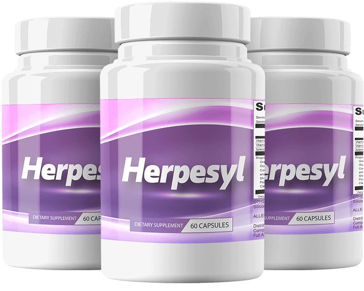
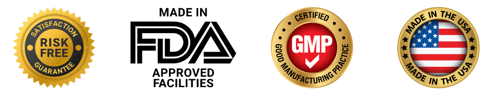
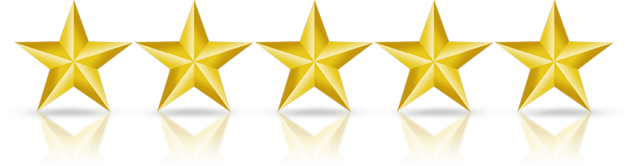
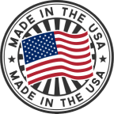
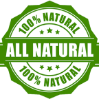
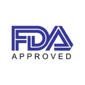
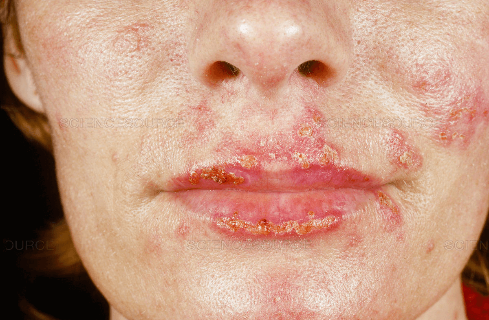

Herpesyl™ Only $49/Bottle - Limited Time Offer
Flat Sale ONLY For Today - Special Offer
Save Upto $300 + Free Shipping + 60 Day Money Back Guarantee
Save Upto $300 + Free Shipping + 60 Day Money Back Guarantee
 
Order TODAY And Save Up To $300!
Save Over 50%!
Save Over 50%!
Herpesyl is a dietary supplement that is 100% natural formula that targets the real cause of herpes, weakening and destroying the virus. Buy from Official Website.
The Formula is Easy to Take Each Day, and it Only Uses Natural Ingredients to Get the Desired Effect.
The Formula is Easy to Take Each Day, and it Only Uses Natural Ingredients to Get the Desired Effect.
Try Herpesyl For Over 50% OFF Today!
Regular Price: $99/per bottle
Only for: $49/per bottle

Why Choose Herpesyl

Made In The USA
Herpesyl is manufactured on US soil.

100% All Natural
All ingredients are pure, natural, and carefully sourced.

FDA Approved Facility
Herpesyl is manufactured according to the latest standards.

What is Herpesyl Supplement?
The creator of Herpesyl, Dr. Adrian Kavanagh, claims that he was inspired to take action after seeing the countless cases of herpes in his office. Each time the story was the same, an otherwise healthy patient in the prime of their life who just can’t shake the herpes virus. The excruciating pain, itchy sores, and weeks of low self-esteem made them ready to try anything to get rid of their herpes.
Rather than let these patients suffer or have to undergo expensive treatment, Herpesyl’s creator instead went on a journey to find a new treatment. After years of studying medical journals, clinical trials, and exotic ingredients, he stumbled upon Dr. Peterson. This doctor claimed to have unlocked the key to stopping herpes dead in its tracks. Together, the two combined their research and found a cocktail of 26 ingredients that showed promise in treating herpes.
They called it Herpesyl.
So just what is this product that claims to not only treat your herpes but eliminate it entirely? According to the Herpesyl website, the key to fighting off herpes lies in the brain’s ability to detect it. Research suggests that despite Herpes being a virus, your body is often unable to fight it effectively. That’s because it puts up a sort of shield to cloak it from detection using a protein called ICP47.
But what is ICP47? The answer is simple and has been well documented by the medical field for years. It’s a protein that sneaky viruses like herpes create to trick your immune system into viewing it as a normal cell. That means that regardless of how strong or active your immune system is, there’s hardly a chance for it to eliminate the herpes virus because it doesn’t know that it’s even there.
Herpesyl’s approach to combatting herpes is simple, by revealing herpes to your body’s immune system, it can finally be properly dealt with naturally. Of course, uncloaking herpes is a difficult task. Luckily, Herpesyl claims to have cracked the code to making herpes reveal itself. It does this through 26 ingredients that have been painstakingly researched and tested. These ingredients aim to do two things. The first is to flush out herpes and reveal it to your immune system. The second is to strengthen your immune system so that once herpes is visible, it can take it out without issue. In order to understand how Herpesyl can help you fight off herpes, it’s important to know the ingredients that it utilizes and their reported effects.
Rather than let these patients suffer or have to undergo expensive treatment, Herpesyl’s creator instead went on a journey to find a new treatment. After years of studying medical journals, clinical trials, and exotic ingredients, he stumbled upon Dr. Peterson. This doctor claimed to have unlocked the key to stopping herpes dead in its tracks. Together, the two combined their research and found a cocktail of 26 ingredients that showed promise in treating herpes.
They called it Herpesyl.
So just what is this product that claims to not only treat your herpes but eliminate it entirely? According to the Herpesyl website, the key to fighting off herpes lies in the brain’s ability to detect it. Research suggests that despite Herpes being a virus, your body is often unable to fight it effectively. That’s because it puts up a sort of shield to cloak it from detection using a protein called ICP47.
But what is ICP47? The answer is simple and has been well documented by the medical field for years. It’s a protein that sneaky viruses like herpes create to trick your immune system into viewing it as a normal cell. That means that regardless of how strong or active your immune system is, there’s hardly a chance for it to eliminate the herpes virus because it doesn’t know that it’s even there.
Herpesyl’s approach to combatting herpes is simple, by revealing herpes to your body’s immune system, it can finally be properly dealt with naturally. Of course, uncloaking herpes is a difficult task. Luckily, Herpesyl claims to have cracked the code to making herpes reveal itself. It does this through 26 ingredients that have been painstakingly researched and tested. These ingredients aim to do two things. The first is to flush out herpes and reveal it to your immune system. The second is to strengthen your immune system so that once herpes is visible, it can take it out without issue. In order to understand how Herpesyl can help you fight off herpes, it’s important to know the ingredients that it utilizes and their reported effects.
How Does Herpesyl Supplement Work?
➢ Phase 1: The Process Of Absorbing Nutrients
The Herpesyl supplement contains a mixture of 26 different herbal extracts, vitamins, and minerals that have been properly mixed.
They begin to be processed and absorbed by your body immediately after being consumed, and during this time, they effectively perform two functions.
➢ Phase 2: The Brain Starts The Process Of Healing Itself
The brain may start to mend itself not long after the connection between the virus and the brain has been destroyed. The formation of new neuropathways will help and notify your immune system to begin the fight against the condition.
Vitamins C and E, in addition to selenium, are active participants in this process and contribute significantly to its success.
➢ Phase 3: The Herpes Virus Has Been Defeated And Destroyed
The brain relays the message to the immune system that the battle has begun, and the body may start the process of permanently removing the virus.
As antiviral medicines, the herbal extracts included in the formulation of Herpesyl are a significant help in the battle against infection.
The Herpesyl supplement contains a mixture of 26 different herbal extracts, vitamins, and minerals that have been properly mixed.
They begin to be processed and absorbed by your body immediately after being consumed, and during this time, they effectively perform two functions.
➢ Phase 2: The Brain Starts The Process Of Healing Itself
The brain may start to mend itself not long after the connection between the virus and the brain has been destroyed. The formation of new neuropathways will help and notify your immune system to begin the fight against the condition.
Vitamins C and E, in addition to selenium, are active participants in this process and contribute significantly to its success.
➢ Phase 3: The Herpes Virus Has Been Defeated And Destroyed
The brain relays the message to the immune system that the battle has begun, and the body may start the process of permanently removing the virus.
As antiviral medicines, the herbal extracts included in the formulation of Herpesyl are a significant help in the battle against infection.
Benefits of Herpesyl Supplement
- Herpesyl supplement helps to eliminate the herpes virus from your system.
- It has a 100% natural formula that can address the cause of the infection and solve it in weeks.
- The Herpesyl solution works for anyone regardless of age, gender, or severity of HSV.
- It helps eliminate the signs and symptoms found over your skin from the inside out and prevents embarrassment.
- Herpesyl supports a healthy immune system, brain cells, and neural pathways that help clean the harmful pathogens.
- It is effective for both HSV-1 and HSV-2 and makes you free from soreness, red spots, and itchiness.
- Several positive Herpesyl user reviews are reported with no negative complaints, which boosts your confidence about the successful results.
- It improves your confidence and makes you date your favorite person without any embarrassment of cold sores.
- The 60-day 100% refund policy makes you feel protected with the Herpesyl purchase.
Limited Time Special Pricing - Act Now!
Secure Your Reserved Herpesyl While Stocks Last
Herpesyl Ingredients
Herpesyl tablets are made up of a combination of 26 natural components. The majority of the Herpesyl formula is kept under non-disclosure accords. The official website of Herpesyl gives us some details about the natural ingredients used in this organic health supplement.
Graviola plant extract:
Graviola is an equatorial endemic plant that is found in both the Americas and also the Caribbean. It’s primarily full of antioxidants. It also has an antiviral impact on the human body. According to the makers, graviola extract aids in the virus’s complete elimination.
Red Raspberry Fruit Extract:
The red raspberry is another very potent antioxidant used in the making of Herpesyl. It is said that red raspberry extract used in Herpesyl supplement protects your cells by preventing oxidative stress processes. It is also known that red raspberries have powerful anti-aging properties.
Green Tea Leaf Extract:
This prominent well-known leaf contains a concentrated and powerful antioxidant mix of components. It also contains a bioactive ingredient that may boost brain function and soothe your nervous system. It’s one of the components that may help to keep the brain healthy.
Turmeric:
Turmeric is a widely used well-known herb that has all-natural anti-inflammatory properties. It is used in the production of many natural-made organic health supplements. Herpesyl is said to be of great importance in the fight against the herpes virus.
Shitake Mushroom:
This fungus that is found growing exclusively in nature is primarily used in your kitchen, mostly pronounced as a tasty cooking mushroom. Yet, due to its strong beneficial antiviral properties, it’s a benchmark in Traditional Chinese Medicine, finding its way into modern times medicine as well.
Burdock Root:
In the Herpesyl production and overall use, burdock root is known for having two main purposes. First, it’s another natural mighty antioxidant affluent food that can be used in your kitchen; second, it’s a strong diuretic substance mix, which causes the virus to be just flushed out like it’s a poison.
Grapeseed:
Another very popular and powerful natural antioxidant is grapeseed, an extraction seed from grape plants. It may highly improve your blood circulation balance and flow, which directly helps your body better fight the elimination of the Herpes virus from your body.
Quercetin seeds:
Quercetin seeds are highly potent with a number of antioxidants, and the seed extract used in Herpesyl is so powerful that it is thought to be able to kill or completely cure even the cancer cells, not only in cases of Herpes infections.
Selenium:
Selenium, popularly known as Selen, is a mighty natural elemental antioxidant that has been chosen to be used in the Herpesyl for its vigorous ability that may boost your immune system and enhance your nervous system enhancing your mental health as well.
Vitamin C:
Vitamin C is base acid that aids the body’s recovery from the herpes virus’s impact and in many other human body disbalances. It may help in the overall healing process during the fight with the viruses and immensely strengthen your immune system.
Vitamin E:
Vitamin E is a beautiful fatty acid vitamin that mostly may aid in the process of appropriate transfer of all present antioxidants throughout the body. It works almost like a lubricant that really eases the flow of other goodies locating their appropriate place and function inside your body.
Additional compounds:
Among additional minor element mixes of Herpesyl are beta-glucan, Panax ginseng, essiac tea complex, pomegranate, arabinogalactan, feline’s paw bark, and lycopene.
60-DAYS 100% MONEY-BACK GUARANTEE
Herpesyl will be available for you to test out for TWO months. You can apply for our FULL refund if you are among the 0.5% who are not satisfied.
Consider this a trial run in case things don't go your way. Herpesyl may work. If it doesn't, you can ask for your money back.
Get your Herpesyl bottle and see for yourself.
The Multiple Benefits of Taking Herpesyl Formula
There are several benefits linked to the use of Herpesyl, and included here are some of them:
Treats herpes from the roots: Many people love Herpesyl because it treats the herpes virus from the sources. It’s the ultimate best treatment for HSV-2 and HSV-1, known for its ability to safely and effectively flush out such awkward conditions. Once you buy the supplement, the issue of doctor visits and drugs will be out of the way. Also, you will not need to struggle with attacks by herpes. You will now start enjoying intimate relationships with optimal happiness.
Brain Nourishment: Herpesyl has a range of powerful and safe ingredients ideal for boosting your brain nerve cells. These essential nutrients work to optimize the function of your brain and cognition. Through the action of the Herpesyl, your body gets the power to flush out the herpes virus existing in the brain cells. That results in healthy neurons, allowing for the efficient transition of signals. As well, it will enhance your overall focus and memory, leading to a more nourished brain.
Boosts your immunity: Herpes virus weakens your immune system, losing the body’s defense mechanism to fight diseases. As with Herpesyl, it works amazingly to enhance your immune system’s power, making you more prone to attack by diseases. One good thing with Herpesyl is its ability to eradicate the virus and effectively prevent future attacks. Intake of the supplement will as well protect you against diseases transmitted sexually.
Treats herpes from the roots: Many people love Herpesyl because it treats the herpes virus from the sources. It’s the ultimate best treatment for HSV-2 and HSV-1, known for its ability to safely and effectively flush out such awkward conditions. Once you buy the supplement, the issue of doctor visits and drugs will be out of the way. Also, you will not need to struggle with attacks by herpes. You will now start enjoying intimate relationships with optimal happiness.
Brain Nourishment: Herpesyl has a range of powerful and safe ingredients ideal for boosting your brain nerve cells. These essential nutrients work to optimize the function of your brain and cognition. Through the action of the Herpesyl, your body gets the power to flush out the herpes virus existing in the brain cells. That results in healthy neurons, allowing for the efficient transition of signals. As well, it will enhance your overall focus and memory, leading to a more nourished brain.
Boosts your immunity: Herpes virus weakens your immune system, losing the body’s defense mechanism to fight diseases. As with Herpesyl, it works amazingly to enhance your immune system’s power, making you more prone to attack by diseases. One good thing with Herpesyl is its ability to eradicate the virus and effectively prevent future attacks. Intake of the supplement will as well protect you against diseases transmitted sexually.
Why Should You Buy Herpesyl?
According to the website, Dr. Adrian Kavanaugh has formulated Herpesyl to provide users with an effective way of countering the viral ailment known as herpes. The supplement provides solution through the use of its impeccable composition which includes a multitude of antioxidants and other potent ingredients.
The main goal of the supplement is to ensure that users are able to retain their long-term health. It ensures that users do not have to sacrifice any aspect of their health to ensure that they can combat herpes.
The condition can often cause people to suffer from body image issues, as well as declining self-confidence. This can cause them to take some irrational steps to defeat the issue, which is part of the problem itself. Thus, Herpesyl supplement attempts to ensure that users can defeat the issue without having to undergo the same pitfalls that are often faced by many in the past.
The supplement attempts to heal the emotional, mental and physical problems that herpes can leave behind on the user. While working to eradicate it from the body, it may also provide a number of potent dietary benefits that will surely be of assistance.
The main goal of the supplement is to ensure that users are able to retain their long-term health. It ensures that users do not have to sacrifice any aspect of their health to ensure that they can combat herpes.
The condition can often cause people to suffer from body image issues, as well as declining self-confidence. This can cause them to take some irrational steps to defeat the issue, which is part of the problem itself. Thus, Herpesyl supplement attempts to ensure that users can defeat the issue without having to undergo the same pitfalls that are often faced by many in the past.
The supplement attempts to heal the emotional, mental and physical problems that herpes can leave behind on the user. While working to eradicate it from the body, it may also provide a number of potent dietary benefits that will surely be of assistance.
Herpesyl Reviews: What Do Customers Have to Say?
Overall, Herpesyl is a dietary supplement that aims to reverse the effects of herpes on the body (both internally and externally). Upon further investigation, we’ve come to realize that the entirety of this formula rests in the inclusion of antioxidants. In fact, many preliminary studies on the ingredients in question have shown that they can elicit positive results. While the supposed doctor duo defended that herpes could go as far as hiding in the brain, we simply focused on the direct impact that these ingredients have on herpes. If such a relationship exists, it naturally makes sense to conclude that the brain is positively influenced in the process.
Although we were astonished yet pleased to see that Mother Nature has proven (to a certain level) to heal bodily impurities, there were a couple of things that were of concern. For starters, the above results are mainly based on preliminary studies, meaning that further investigations are warranted for safety reasons. Second, we are told that two doctors are responsible for this formula. However, it was difficult to validate their credentials, seeing that very little is known about the company they represent. In the case where a company is not involved, we know close to nothing about the manufacturing company. The latter usually highlights whether or not strict guidelines were followed to maximize on purity and quality.
With so many uncertainties, we cannot simply put a value to the suggested prices. All-in-all, we highly recommend that everyone conducts their own research on this supplement, specifically in terms of their own health prior to moving forward. A great first step might be to contact the customer service team directly.
Although we were astonished yet pleased to see that Mother Nature has proven (to a certain level) to heal bodily impurities, there were a couple of things that were of concern. For starters, the above results are mainly based on preliminary studies, meaning that further investigations are warranted for safety reasons. Second, we are told that two doctors are responsible for this formula. However, it was difficult to validate their credentials, seeing that very little is known about the company they represent. In the case where a company is not involved, we know close to nothing about the manufacturing company. The latter usually highlights whether or not strict guidelines were followed to maximize on purity and quality.
With so many uncertainties, we cannot simply put a value to the suggested prices. All-in-all, we highly recommend that everyone conducts their own research on this supplement, specifically in terms of their own health prior to moving forward. A great first step might be to contact the customer service team directly.
Limited Time Special Pricing - Act Now!
Secure Your Reserved Herpesyl While Stocks Last
WARNING: Stock levels of Herpesyl are limited Accept your reserved bottle above NOW before your discount expires.
Herpesyl Frequently Asked Questions
How Many Bottle Should I Order?
Herpesyl is best used for at least 3 to 6 months to achieve the best results. This will ensure you reach your goals. Herpesyl can be purchased monthly, but we recommend you buy Herpesyl 3 to 6 Bottle as we offer discounts and that's the minimum amount you need to see results. You should note that this discount is not available year-round. So take advantage of it while you can.
Is Herpesyl Safe?
Herpesyl contains 100% natural and safe ingredients. It is therefore completely safe, effective, and natural. Herpesyl is used daily by thousands of people. There have been no reported side effects. Herpesyl are made in the USA at our FDA-approved, GMP-certified facility. We adhere to the highest standards. It is 100% natural, vegetarian, and non-GMO. Before using, consult your doctor if you have any medical conditions.
How Will Herpesyl Be Shipped To Me And How Quickly?
You can expect your order to be shipped within 5-7 business day if you live in the United States of America or Canada. Orders from outside the USA or Canada typically take between 8-15 business days (+ customs clearance). Delivery times may be affected by the Covid-19 pandemic. We will deliver your order to your office or home using a premium carrier like FedEx or UPS.
Is Herpesyl Aproved By The FDA?
Herpesyl is manufactured in the USA by our FDA-approved, GMP-certified facility. We adhere to the highest standards.
Does Herpesyl really work?
Yes. It’s scientifically proven.Not only have double blind tests and research been performed over the years...But Herpesyl is also backed by research from top institutes and Universities across the world. Brown University, Mayo Clinic, University of Miami and Columbia University and dozens of other top scientific resources.And if you scroll back up, you’ll see plenty of peer-reviewed scientific research, and testimonials on how beneficial and powerful Herpesyl is.
How can I buy Herpesyl Supplement?
Herpesyl is available through Herpesyl.com Official Website. For a limited time, they offer three discounted packages: Basic bottle - $69 Per Bottle.
Don't Wait Any Longer! Order Your Discounted bottle Now!
Regular Price: $99/per bottle
Only for: $49/per bottle
Copyright © 2022 - Herpesyl
FDA Compliance
All content and information found on this page are for informational purposes only and are not intended to diagnose, treat, cure or prevent any disease. The FDA hasn't evaluated the statements provided on this page. Make sure you consult with a licensed doctor before taking any supplement or making any changes to your diet or exercise plan. Individual results may vary.
The display of third-party trademarks and trade names on this site does not necessarily indicate any affiliation or ndorsements of our website. If you click a merchantlink and buy a product or service on their website, we may be paid a fee by he merchant.